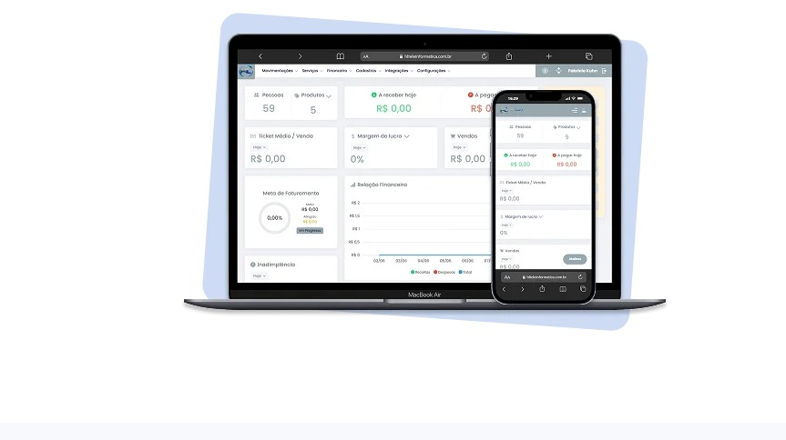

Central de ajuda da HL Teleinformática para quem usa o sistema no dia a dia do comércio: vendas, estoque, notas fiscais e financeiro, explicados sem enrolação.

Digite o que você procura e o site mostra o manual ou a resposta certa.
Pesquise nos mais de 640 manuais do sistema.
Pesquise nas perguntas frequentes e nos vídeos.
Prévias direto do nosso canal do YouTube. Clique em qualquer vídeo para assistir lá.
Carregando vídeos do canal…
Separado por assunto. Não achou sua dúvida aqui? É só chamar o suporte.
O HL SOFT é o sistema de automação comercial da HL Teleinformática, desenvolvido para facilitar a gestão do dia a dia de lojas e comércios. Em uma única solução, o sistema reúne recursos como vendas (PDV), controle de estoque, financeiro e emissão de documentos fiscais, proporcionando mais praticidade e organização para o negócio.
O HL SOFT permite realizar as principais operações do sistema localmente, como vendas e controle de estoque. A conexão com a internet é necessária para recursos que dependem de comunicação com a Sefaz, como a emissão de documentos fiscais, além de atualizações e outros serviços online. Caso a conexão seja interrompida, algumas operações continuam normalmente, e os processos que dependem da comunicação online são concluídos assim que a internet voltar.
O HL SOFT é compatível com qualquer computador com acesso à internet, além de celular e tablet. Para uma melhor experiência e desempenho, recomendamos processador superior a Intel Core i5 ou Ryzen 5, memória RAM acima de 8 GB e armazenamento SSD de no mínimo 256 GB — isso garante mais agilidade durante o uso do sistema. Se você já tem um computador com outra configuração, nossa equipe de suporte pode avaliar o equipamento e verificar a compatibilidade.
No dashboard do sistema, vá em Movimentações > Pré-venda e NFC-e. No canto direito, clique em PDV e aperte Salvar para abrir o caixa. Use F2 para selecionar os itens e F4 para finalizar a venda, escolhendo e adicionando a forma de pagamento.
Na parte de Pré-vendas e NFC-e, localize a venda que deseja cancelar e clique no botão vermelho de cancelar. Escolha o motivo e confirme o cancelamento.
Sim! Basta selecionar a aba de desconto na hora da venda, informar o valor ou o percentual desejado e apertar Enter.
Basta clicar em Movimentações > NF-e > Nova NF-e. Fique atento na hora de preencher as tributações — se precisar de ajuda, chame a gente no WhatsApp.
Basta ir na aba de Cadastros, clicar em Produtos e depois em Novo — você já estará pronto para cadastrar.
Basta ir em Cadastros e filtrar pelo produto desejado. Lá você pode ver preços, estoque e muito mais.
Pelo módulo de Compras, dá para lançar a entrada manualmente ou importar direto o arquivo XML da nota fiscal do fornecedor — o sistema cadastra produto, fornecedor e quantidade automaticamente a partir do XML.
Você pode fazer uma nota de devolução. Entre em contato que a gente te auxilia.
No PDV, depois de realizar a venda, você pode consultar na aba Financeiro.
Na aba Movimentações > Relatórios, você pode escolher o relatório desejado.
Não se preocupe — o HL SOFT é online, então não existe necessidade de fazer backup manual. Seus dados ficam salvos com segurança automaticamente.
Primeiro, feche e abra o sistema novamente. Se continuar lento, verifique a conexão com a internet e o espaço livre no computador. Persistindo o problema, chame o suporte e diga o que aparecia na tela no momento da trava — isso agiliza o diagnóstico.
A senha só pode ser redefinida por um usuário com permissão de administrador dentro do sistema, ou pelo suporte da HL. Chame a gente pelo WhatsApp que resolvemos rápido.
O HL SOFT é atualizado automaticamente — você sempre vai ver novidades chegando semanalmente, sem precisar instalar nada manualmente.
O mais rápido é pelo botão de WhatsApp aqui no site.
Sim. Além do HL SOFT, a HL Teleinformática atende clientes que usam o Sistema Control. Para achar um manual, use a caixa de busca do Sistema Control no topo desta página.
Sim — fale com o suporte para agendar um treinamento, presencial ou por chamada de vídeo, para a equipe que vai usar o sistema no dia a dia.
Os resumos abaixo foram feitos a partir dos manuais do Sistema Control. Em cada resposta há o link do manual completo (PDF).
Quando o sistema é aberto e há uma versão nova, o Assistente de Atualização exibe uma janela avisando. Você pode iniciar o download na hora ou apenas verificar se há versão disponível. Para conferir manualmente, use o menu Ajuda > Verificar atualizações. Na própria janela há um link para ver as novidades de cada versão.
O assistente existe a partir da versão 1.25.4.0.
Sistemas Windows aceitos: 8, 8.1, 10, Server 2012 ou 2016. O Windows 8, o Server 2003 e o 2008 têm restrições para NF-e, NFC-e, SAT e MF-e, porque a versão 4.00 dos documentos eletrônicos exige o protocolo TLS 1.2.
Demais requisitos citados no manual: SSD (ou superior) conectado a SATA 3, 8 GB de memória RAM e monitor com resolução mínima de 1024x768 (recomendado 1680x1050 ou superior).
Antes de formatar, desative a licença da máquina em Ajuda > Dados do Registro / Licenças: selecione a licença do servidor e clique em Desativar Terminal. O sistema mostra o número do HD para você conferir se está desativando o terminal correto. Depois da formatação, siga o manual de reinstalação.
O acesso remoto já vem junto com o sistema. Há três formas de liberar: pelo executável chamado Suporte, na pasta de instalação do sistema; pelo atalho na pasta do sistema na área de trabalho; ou pelo menu Ajuda > Assistência Remota.
Depois de abrir, é só informar ao atendente o número que aparece em "Sua ID".
É usada quando há suspeita de que alguma tabela do banco de dados corrompeu, ou para redefinir algum procedimento. O manual recomenda executar apenas com o suporte técnico, porque pode causar danos irreversíveis à base, e só depois de pelo menos três backups por base, com tamanhos válidos. Fica em Ajuda > Manutenção de tabelas.
No computador servidor, dê dois cliques no ícone Preparar Cópia de Segurança, na área de trabalho. Enquanto o cursor estiver piscando, o backup está sendo feito; quando a janela fechar, a cópia foi salva no diretório configurado na instalação.
Depois, confira a data, a hora e o tamanho do arquivo pelo atalho Ver Cópias de Segurança e salve uma cópia em mídia externa.
Sim. O backup automático é um executável que fica apenas no computador servidor e permite salvar a cópia em nuvem pelo Dropbox e pelo Google Drive. Para habilitar, acesse o Control Desktop em Utilitários > Configurações > Serviços > Gerenciador de base de dados e habilite as bases desejadas (não é permitido habilitar duas bases com o mesmo CNPJ).
O aplicativo de backup em nuvem exige o sistema na versão 1.19.2.0 ou superior e uma licença adquirida com o setor comercial. A partir da versão 1.25.3.0, o nome do arquivo de backup automático passa a incluir o CNPJ da empresa.
Acesse Manutenção > Bancos e Caixa > Abertura de Caixa, ou use a tecla F8 a qualquer momento. Informe o operador (o sistema sugere o usuário logado), a espécie e o valor de abertura. O fechamento funciona da mesma forma, em Fechamento do Caixa (ou F8).
Os manuais recomendam fechar todos os caixas antes de atualizar a versão do sistema e abrir só depois da atualização, para evitar divergência de valores nos relatórios.
No PDV Fiscal, pressione Ctrl+F11 para abrir o menu de opções e clique em Sangria. A janela tem três partes: a origem (de qual caixa sai o valor), o destino e os dados da sangria. O destino pode ser o caixa de outro operador, o caixa cofre da empresa ou um banco cadastrado no sistema. Para usar o caixa cofre, antes é preciso marcar uma conta como caixa cofre.
Existe. Em Utilitários > Configurações > Configurações do Sistema, aba NFC-e, habilite "Habilitar contingência: automático". O limite padrão é de 100 notas em contingência, e você pode alterar. Quando uma instabilidade ou erro cadastral impede a emissão, as notas pendentes são autorizadas em segundo plano por um serviço, evitando fila e travamento do caixa.
Para isso existe o PDV Off-line (antigo Standalone), que roda por um serviço do Windows instalado junto com o terminal e sincroniza os dados com o servidor (importação e exportação). Para usar a versão 2, acesse Utilitários > Configurações > Configurações do Sistema, aba Configurações2, e escolha "Versão 2 (Nova)".
Ele não funciona para empresas do regime MEI, e na tabela de planos o PDV Fiscal Off-line aparece apenas no plano Completo.
Acesse Manutenção > Cartas de Correção Eletrônica, filtre por data e status da nota, clique em Abrir e depois em Incluir. Informe o número da nota e pressione Enter, descreva a correção (de 15 a 1000 caracteres, sem caracteres especiais nem quebra de linha) e clique em Autorizar.
A carta não pode corrigir valores que determinam o imposto (base de cálculo, alíquota, preço, quantidade, valor da operação — nesses casos usa-se NF-e complementar), dados que mudem remetente ou destinatário, nem a data de emissão ou de saída.
No menu Ajuda > Loja do certificado você visualiza os itens, valores e informações de cada certificado e pode comprar. O sistema também exibe um alerta quando o certificado está prestes a vencer ou já venceu.
Em Manutenção > Compras > Lançar Notas de Compra, clique em Importar XML. São três possibilidades: inclusão manual (comum na compra de produtor rural, em que a empresa faz a contranota); importar o XML da Receita, pela chave de acesso da nota; ou importar o XML a partir de um arquivo.
Na versão 1.25.0.0 foi criada, na aba Compras das configurações, a opção de bloquear a importação de XML de outros CNPJs (vem desmarcada por padrão).
Remessa: Manutenção > Contas à Receber > Gerenciar Boletos > Gerar Remessa. Para o boleto aparecer no filtro, a venda precisa estar finalizada, com as parcelas no contas a receber e o boleto vinculado à parcela.
Retorno: Manutenção > Contas à Receber > Gerenciar Retornos > Importar Retornos. Informe a conta e o convênio, selecione o arquivo de retorno e clique em Abrir. O controle de geração de boletos consta apenas no plano Completo.
Gera um QR-Code exclusivo para cada transação; o cliente escaneia ou usa o copia e cola. A integração é feita pela API PIX do banco, com monitoramento dos pagamentos em tempo real, e elimina taxas de adquirentes.
Exige licença válida: no método Pós Pago, só no plano Completo; no Pré Pago, em todos os planos. A chave é cadastrada em Cadastros > Financeiro > Chaves PIX integrado (bancos disponíveis no manual: Sicoob, Sicredi, Banrisul, Banco do Brasil, Bradesco e PagSeguro).
No PDV, abra o menu de opções com Ctrl+F11, clique em Ativar/Desativar TEF, selecione SIM e confirme em OK. No retaguarda, confira as espécies de cartão em Cadastros > Financeiro > Espécies, verificando os campos marcados (como Comprovante TEF).
Use o módulo específico: Manutenção > Vendas > Devolução de vendas. Passe com Enter o número e a data do pedido, informe o cliente (o mesmo código da venda) e clique em Abrir para informar os itens devolvidos. Pelo módulo, o preço da venda é mantido e o estoque é controlado corretamente.
Acesse Manutenção > Vendas > Orçamentos. O número do orçamento é sequencial e gerado pelo sistema (basta passar com Enter) e a data é preenchida automaticamente. Informe o cliente (código interno), o vendedor e a validade. Pela lupa é possível consultar reservas abertas, fechadas ou canceladas. O módulo de orçamento consta nos planos Intermediário e Completo.
A ordem de serviço formaliza um trabalho a ser efetuado e pode ser encaminhada ao cliente ou servir apenas de controle interno. Acesse Manutenção > Vendas > Ordem de Serviço, ou use o atalho Ctrl+F11. O número do pedido é sequencial e gerado pelo sistema (Enter). Esse módulo consta apenas no plano Completo.
Primeiro cadastre a filial em Cadastros > Filiais (só é possível excluir filiais que ainda não tiveram movimentação). A transferência acontece em duas pontas: a empresa que envia faz a saída em Manutenção > Operações com Filiais > Saída - Transferência Interna, informando a empresa destino e o operador, e a filial registra a entrada na própria base. O controle de matriz e filial consta no plano Completo.
Sim, pelo Conversor Universal, que converte dados de qualquer sistema usando planilhas do Excel. O sistema precisa estar instalado no computador onde será feita a conversão. Os arquivos .xls ficam na pasta estrutura_padrao e devem ser preenchidos com o que se deseja converter (por exemplo, produtos.xls para os produtos).
Alguns exemplos da tabela do manual: emissão de NF-e, NFC-e, SAT e MF-e e controle financeiro estão nos três planos; orçamento de venda, NFS-e e controle de estoque estão no Intermediário e no Completo; ordem de serviço, geração de boletos, matriz e filial, controle de lotes e PDV Fiscal Off-line estão apenas no Completo.
Estamos por perto para resolver o que o FAQ não deu conta.